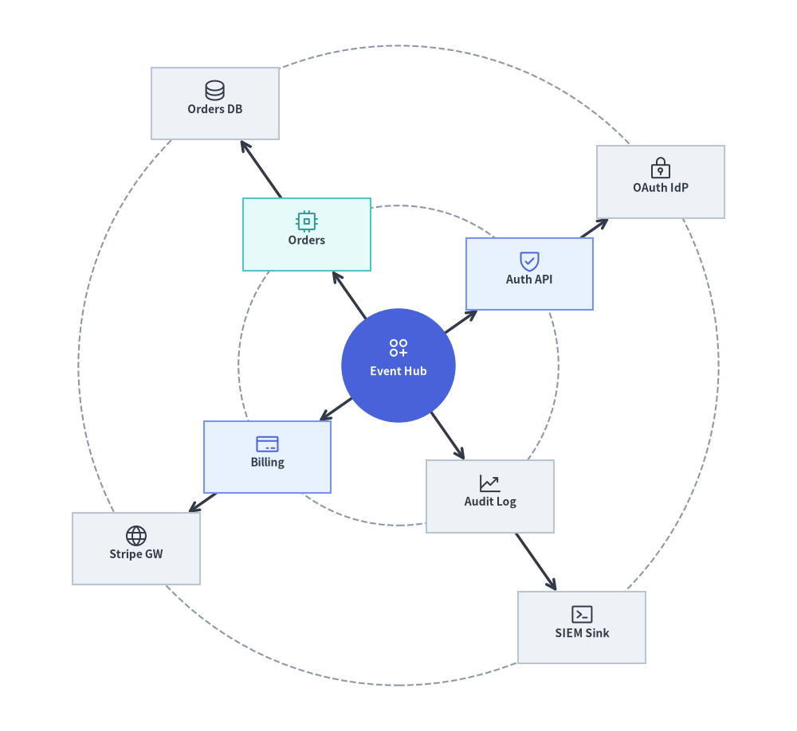
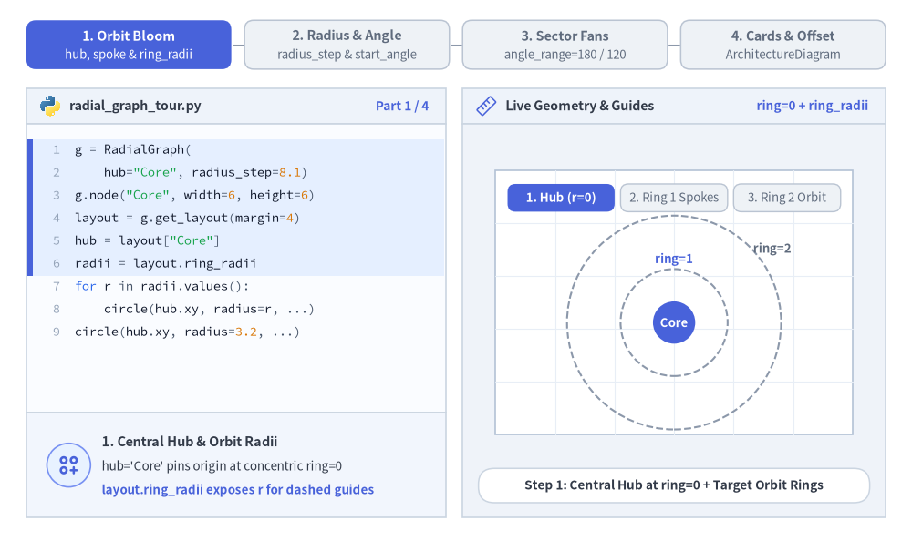
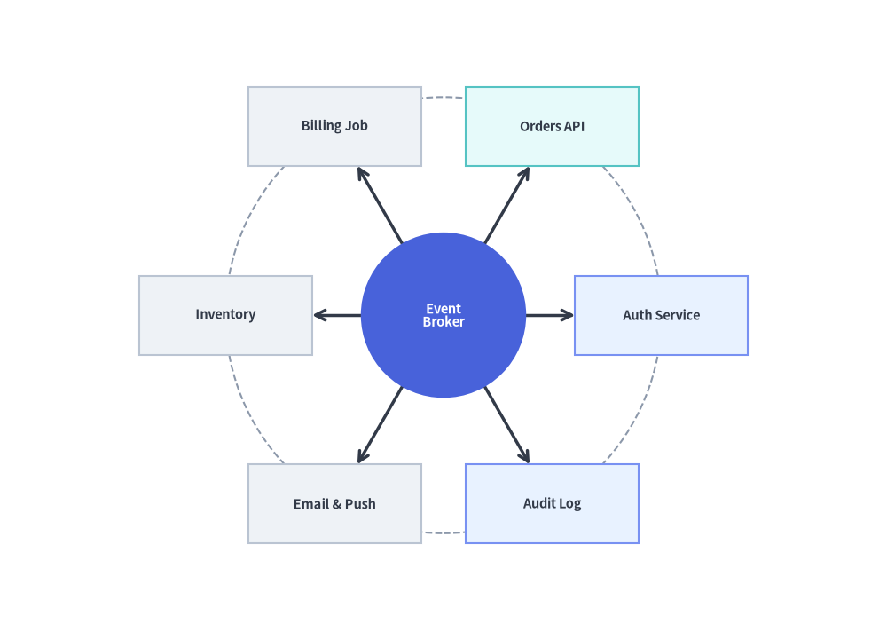
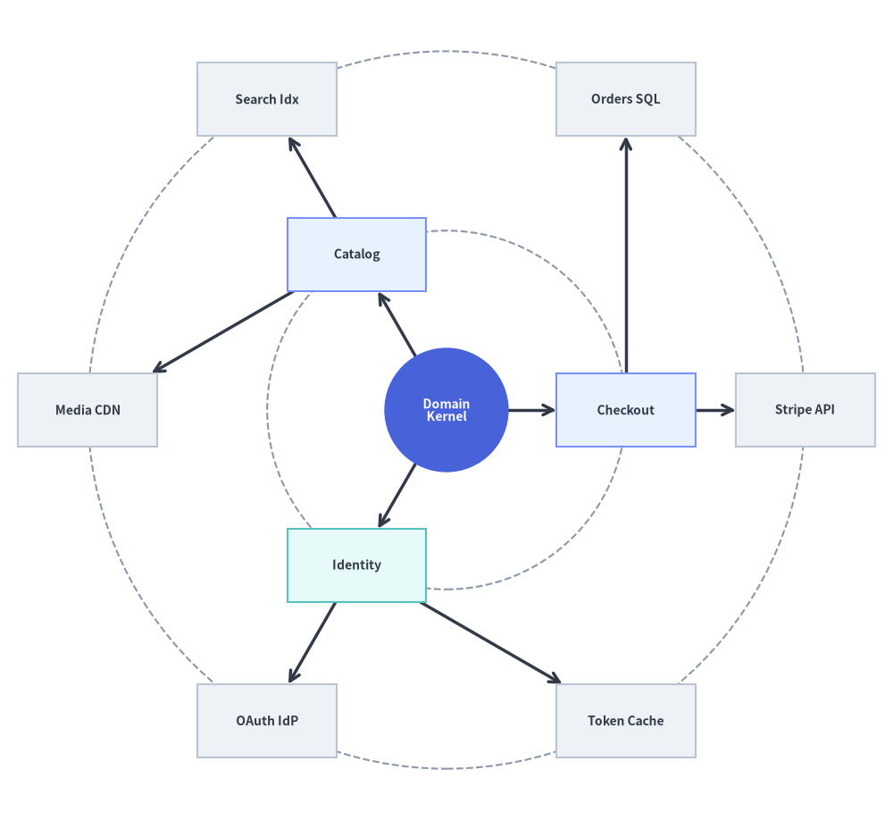
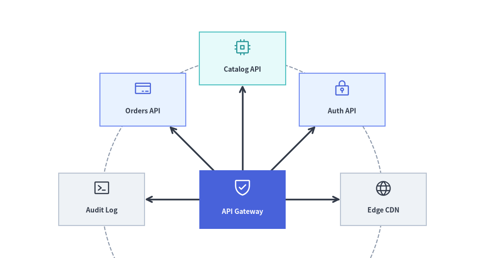

RadialGraph: 同心円軌道とハブ＆スポークトポロジ
RadialGraph は、中心ハブノードを原点（ring=0）に配置し、接続されたノードを同心円状の軌道リング（ring=1, 2, ...）上に配置します。サブツリーの大きさに応じて角度セクタが比例配分されるため、マルチホップのスポークが線交差なしに外側へ放射状に広がります。
イベント駆動のメッセージメッシュ、Pub/Sub ブローカートポロジ、マイクロサービスのハブ＆スポークネットワーク、同心円状の依存関係レーダー向けに特化して設計されています。layout = g.get_layout(margin=...) を呼び出すことで、ノード中心座標（layout[id].xy）、放射状スポークのポリライン（layout.edges）、および同心円軌道の半径（layout.ring_radii）を取得できます。

Source Code
from drawlib.canvas import save, setup
from drawlib.graph import RadialGraph
from drawlib.icons import phosphor
from drawlib.lines import lines
from drawlib.shapes import circle, rectangle
from drawlib.styles import Styles
setup(width=122, height=112)
g = RadialGraph(
hub="core",
radius_step=24.5,
start_angle=35.0,
default_node_width=19.5,
default_node_height=11.0,
)
# Ring 0: Central Hub
g.node("core", width=17.5, height=17.5)
# Ring 1: Core Services
g.spoke("core", "auth", ring=1)
g.spoke("core", "orders", ring=1)
g.spoke("core", "billing", ring=1)
g.spoke("core", "audit", ring=1)
# Ring 2: Outer Adapters
g.spoke("auth", "idp", ring=2)
g.spoke("orders", "db", ring=2)
g.spoke("billing", "stripe", ring=2)
g.spoke("audit", "siem", ring=2)
# 1. Solve concentric coordinates & orbit ring radii
layout = g.get_layout(margin=5.0)
hub_n = layout["core"]
# 2. Draw dashed circular orbit guides from layout.ring_radii
for r in layout.ring_radii.values():
circle(hub_n.xy, radius=r, style=Styles.MutedDashed)
# 3. Draw radial spoke edges (from hub center for ring 0->1 so lines meet the circular hub perimeter)
for e in layout.edges:
pts = [hub_n.xy, e.dst_port] if e.src == "core" else e.points
lines(pts, arrow_head="->", style=Styles.DarkBold)
# 4. Draw central circular hub and satellite cards with Phosphor icons
circle(
hub_n.xy,
radius=hub_n.width / 2,
style=Styles.PrimaryFlat,
text="\nEvent Hub",
text_style=Styles.WhiteBold.patch(text_size=10.0),
)
phosphor.circles_three_plus((hub_n.x, hub_n.y + 2.7), width=3.8, style=Styles.White)
spokes = {
"auth": ("\nAuth API", Styles.PrimaryNeutral, phosphor.shield_check, Styles.Primary),
"orders": ("\nOrders", Styles.SecondaryNeutral, phosphor.cpu, Styles.Secondary),
"billing": ("\nBilling", Styles.PrimaryNeutral, phosphor.credit_card, Styles.Primary),
"audit": ("\nAudit Log", Styles.Neutral, phosphor.chart_line_up, Styles.Dark),
"idp": ("\nOAuth IdP", Styles.Neutral, phosphor.lock_key, Styles.Dark),
"db": ("\nOrders DB", Styles.Neutral, phosphor.database, Styles.Dark),
"stripe": ("\nStripe GW", Styles.Neutral, phosphor.globe, Styles.Dark),
"siem": ("\nSIEM Sink", Styles.Neutral, phosphor.terminal_window, Styles.Dark),
}
for nid, (label, box_st, icon_fn, ic_st) in spokes.items():
n = layout[nid]
rectangle(
n.xy,
width=n.width,
height=n.height,
style=box_st,
text=label,
text_style=Styles.DarkBold.patch(text_size=10.0),
)
icon_fn((n.x, n.y + 2.0), width=3.8, style=ic_st)
save()
1. 基本概念と基本的な使い方
RadialGraph は三角関数を手書きすることなく極座標のハブ＆スポーク配置を計算します。中心ハブを ring=0 に置き、g.spoke(parent, child, ring=...) でサテライトノードを接続して g.get_layout(margin=...) を呼び出すと、カード中心座標（layout[id].xy）、境界クリップ済みの放射状エッジ（layout.edges）、および同心円軌道ガイドの半径（layout.ring_radii）が得られます。radius_step と start_angle でリング間隔と開始角度を調整したり、angle_range（180.0 や 110.0 など）を絞って指向性のある扇形（アークファン）を作ったり、計算済み座標を ArchitectureDiagram に直接渡して layout.offset(...) で微調整したりできます。

Source Code
from __future__ import annotations
import math
from drawlib.anim import Animation
from drawlib.canvas import save, setup
from drawlib.diagrams.architecture import ArchitectureDiagram, Node, PhosphorIcon
from drawlib.graph import GraphLayout, RadialGraph
from drawlib.icons import code as code_icons
from drawlib.icons import phosphor
from drawlib.lines import line, lines
from drawlib.shapes import circle, rectangle
from drawlib.smartarts import SourceCode, SourceCodeStyles
from drawlib.styles import Styles
from drawlib.text import text
W, H = 138.0, 82.0
setup(width=W, height=H)
anim = Animation(fps=10.0, loop=0)
CODE_TEXT_SIZE = 10.0
PT_TO_CANVAS = W / 720.0
FONT_CANVAS = CODE_TEXT_SIZE * PT_TO_CANVAS
LINE_H = FONT_CANVAS * 1.8
PAD_Y = FONT_CANVAS * 1.2
CODE_STYLES = SourceCodeStyles.get("default", font_lang="en", text_size=CODE_TEXT_SIZE).patch(
box_style=Styles.Neutral.patch(shape_fill_color=(0, 0, 0, 0), shape_line_width=0),
)
PANE_HEADER = Styles.Neutral.patch(
shape_fill_color=(238, 243, 250),
shape_line_color=(203, 213, 225),
shape_line_width=1.2,
shape_r=0.0,
)
EDITOR_BODY = Styles.Neutral.patch(
shape_fill_color=(250, 252, 255),
shape_line_color=(203, 213, 225),
shape_line_width=1.2,
shape_r=0.0,
)
TAKEAWAY_BODY = Styles.Neutral.patch(
shape_fill_color=(242, 246, 253),
shape_line_color=(203, 213, 225),
shape_line_width=1.2,
shape_r=0.0,
)
STUDIO_BODY = Styles.Neutral.patch(
shape_fill_color=(239, 243, 249),
shape_line_color=(203, 213, 225),
shape_line_width=1.2,
shape_r=0.0,
)
PART_ITEMS = [
("1. Orbit Bloom", "hub, spoke & ring_radii"),
("2. Radius & Angle", "radius_step & start_angle"),
("3. Sector Fans", "angle_range=180 / 120"),
("4. Cards & Offset", "ArchitectureDiagram"),
]
def shift_layout(layout: GraphLayout, dx: float, dy: float) -> GraphLayout:
"""Translate a solved GraphLayout into the right studio coordinate sheet."""
for nl in layout.nodes.values():
nl.xy = (round(nl.x + dx, 2), round(nl.y + dy, 2))
if nl.parent_id is None:
nl.local_xy = nl.xy
for cl in layout.clusters.values():
cl.bbox = (round(cl.cx + dx, 2), round(cl.cy + dy, 2), cl.width, cl.height)
if cl.parent_id is None:
cl.local_bottom_left = cl.bottom_left
for el in layout.edges:
el.src_port = (round(el.src_port[0] + dx, 2), round(el.src_port[1] + dy, 2))
el.dst_port = (round(el.dst_port[0] + dx, 2), round(el.dst_port[1] + dy, 2))
el.waypoints = [(round(wx + dx, 2), round(wy + dy, 2)) for wx, wy in el.waypoints]
return layout
def draw_arc_guide(
center_xy: tuple[float, float],
radius: float,
deg_start: float,
deg_end: float,
style: object,
steps: int = 36,
) -> None:
"""Draw a circular arc polyline within the studio sheet."""
cx, cy = center_xy
pts = []
for idx in range(steps + 1):
deg = deg_start + (deg_end - deg_start) * (idx / steps)
rad = math.radians(deg)
pts.append((cx + radius * math.cos(rad), cy + radius * math.sin(rad)))
lines(pts, style=style) # type: ignore[arg-type]
def draw_step_bar(active_part: int) -> None:
"""Draw top 4-part progress bar (active_part is 1..4)."""
pill_w = 31.0
pill_h = 7.4
gap = 2.0
start_x = 4.0 + pill_w / 2.0
cy = 75.2
for idx, (label, sublabel) in enumerate(PART_ITEMS, start=1):
cx = start_x + (idx - 1) * (pill_w + gap)
if idx > 1:
prev_cx = cx - (pill_w + gap)
line(
(prev_cx + pill_w / 2.0 + 0.2, cy),
(cx - pill_w / 2.0 - 0.2, cy),
style=Styles.PrimaryBold if idx <= active_part else Styles.MutedThin,
)
if idx == active_part:
st = Styles.PrimaryFlat.patch(shape_r=1.4)
tst = Styles.WhiteBold.patch(text_size=10.3)
sub_tst = Styles.White.patch(text_size=9.5)
elif idx < active_part:
st = Styles.PrimaryNeutral.patch(shape_r=1.4, shape_line_width=1.1)
tst = Styles.PrimaryBold.patch(text_size=10.3)
sub_tst = Styles.Primary.patch(text_size=9.5)
else:
st = Styles.Neutral.patch(shape_r=1.4, shape_line_width=1.1)
tst = Styles.MutedBold.patch(text_size=10.3)
sub_tst = Styles.Muted.patch(text_size=9.5)
rectangle((cx, cy), width=pill_w, height=pill_h, style=st)
text((cx, cy + 1.35), label, style=tst)
text((cx, cy - 1.55), sublabel, style=sub_tst)
def draw_left_pane(
active_part: int,
code_lines: list[str],
hl_range: tuple[int, int],
icon_fn: object,
summary_title: str,
summary_line1: str,
summary_line2: str,
) -> None:
"""Draw left Python code editor + bottom concept takeaway card."""
x0, w = 4.0, 63.5
cx = x0 + w / 2.0
top_y = 63.2
header_h = 5.4
editor_h = 43.8
takeaway_h = 15.8
rectangle((cx, top_y + header_h / 2.0), width=w, height=header_h, style=PANE_HEADER)
code_icons.python((x0 + 3.6, top_y + header_h / 2.0), width=3.4, style=Styles.Neutral)
text(
(x0 + 6.5, top_y + header_h / 2.0),
"radial_graph_tour.py",
style=Styles.DarkBold.patch(text_size=10.2, halign="left"),
)
text(
(x0 + w - 2.6, top_y + header_h / 2.0),
f"Part {active_part} / 4",
style=Styles.PrimaryBold.patch(text_size=9.8, halign="right"),
)
rectangle((cx, top_y - editor_h / 2.0), width=w, height=editor_h, style=EDITOR_BODY)
hl_start, hl_end = hl_range
hl_top = top_y - PAD_Y - hl_start * LINE_H
hl_bot = top_y - PAD_Y - (hl_end + 1) * LINE_H
hl_cy = (hl_top + hl_bot) / 2.0
hl_h = hl_top - hl_bot
rectangle(
(cx, hl_cy),
width=w - 0.6,
height=hl_h,
style=Styles.Neutral.patch(shape_fill_color=(229, 239, 255), shape_line_width=0),
)
rectangle(
(x0 + 0.55, hl_cy),
width=0.9,
height=hl_h,
style=Styles.PrimaryFlat.patch(shape_line_width=0),
)
SourceCode.draw(
xy=(x0, top_y),
width=w,
code="\n".join(code_lines),
styles=CODE_STYLES,
code_lang="python",
show_linenum=True,
align="top_left",
)
take_cy = 3.6 + takeaway_h / 2.0
rectangle((cx, take_cy), width=w, height=takeaway_h, style=TAKEAWAY_BODY)
circle(
(x0 + 6.4, take_cy),
radius=3.3,
style=Styles.PrimaryNeutral.patch(shape_line_width=1.2),
)
icon_fn((x0 + 6.4, take_cy), width=3.8, style=Styles.PrimaryBold) # type: ignore[operator]
text(
(x0 + 11.4, take_cy + 3.6),
summary_title,
style=Styles.DarkBold.patch(text_size=10.4, halign="left"),
)
text(
(x0 + 11.4, take_cy - 0.2),
summary_line1,
style=Styles.Dark.patch(text_size=9.7, halign="left"),
)
text(
(x0 + 11.4, take_cy - 3.8),
summary_line2,
style=Styles.PrimaryBold.patch(text_size=9.6, halign="left"),
)
def draw_geometry_studio(param_badge: str, footer_caption: str) -> tuple[float, float]:
"""Draw right geometry lab shell, inner coordinate sheet with subtle grid, and footer."""
x0, w = 70.0, 64.0
cx = x0 + w / 2.0
top_y = 63.2
header_h = 5.4
body_h = 59.6
rectangle((cx, top_y + header_h / 2.0), width=w, height=header_h, style=PANE_HEADER)
phosphor.ruler((x0 + 3.6, top_y + header_h / 2.0), width=3.4, style=Styles.Primary)
text(
(x0 + 6.5, top_y + header_h / 2.0),
"Live Geometry & Guides",
style=Styles.DarkBold.patch(text_size=10.2, halign="left"),
)
text(
(x0 + w - 2.6, top_y + header_h / 2.0),
param_badge,
style=Styles.PrimaryBold.patch(text_size=9.6, halign="right"),
)
rectangle((cx, 3.6 + body_h / 2.0), width=w, height=body_h, style=STUDIO_BODY)
sheet_cx, sheet_cy = cx, 36.2
sheet_w, sheet_h = 54.0, 40.0
sx0, sy0 = sheet_cx - sheet_w / 2.0, sheet_cy - sheet_h / 2.0
rectangle(
(sheet_cx, sheet_cy),
width=sheet_w,
height=sheet_h,
style=Styles.Neutral.patch(
shape_fill_color=(255, 255, 255),
shape_line_color=(180, 194, 214),
shape_line_width=1.2,
),
)
g_st = Styles.MutedThin.patch(line_color=(232, 238, 246), line_width=0.8)
for gx in range(1, 6):
vx = sx0 + gx * (sheet_w / 6.0)
line((vx, sy0), (vx, sy0 + sheet_h), style=g_st)
for gy in range(1, 5):
vy = sy0 + gy * (sheet_h / 5.0)
line((sx0, vy), (sx0 + sheet_w, vy), style=g_st)
rectangle(
(cx, 8.4),
width=59.2,
height=5.2,
style=Styles.Neutral.patch(
shape_fill_color=(255, 255, 255),
shape_line_color=(203, 213, 225),
shape_line_width=1.1,
shape_r=2.4,
),
text=footer_caption,
text_style=Styles.DarkBold.patch(text_size=9.8),
)
return sheet_cx, sheet_cy
def draw_sub_pills(scx: float, labels: list[str], active_idx: int) -> None:
"""Draw 3-step tracker pills near the top of the studio sheet."""
pw, ph, pgap = 16.2, 4.2, 0.9
p_start = scx - (3 * pw + 2 * pgap) / 2.0 + pw / 2.0
for idx, lbl in enumerate(labels):
px = p_start + idx * (pw + pgap)
if idx == active_idx:
pst = Styles.PrimaryFlat.patch(shape_r=1.2)
ptst = Styles.WhiteBold.patch(text_size=9.5)
elif idx < active_idx:
pst = Styles.PrimaryNeutral.patch(shape_r=1.2, shape_line_width=1.0)
ptst = Styles.PrimaryBold.patch(text_size=9.5)
else:
pst = Styles.Neutral.patch(shape_r=1.2, shape_line_width=1.0)
ptst = Styles.Muted.patch(text_size=9.5)
rectangle((px, 52.0), width=pw, height=ph, style=pst, text=lbl, text_style=ptst)
# =========================================================================
# Part 1: Orbit Bloom — hub, spoke & ring_radii solved once via RadialGraph
# =========================================================================
def build_part1_layout() -> GraphLayout:
g = RadialGraph(
hub="Core",
radius_step=8.1,
start_angle=0.0,
default_node_width=5.6,
default_node_height=3.6,
)
g.node("Core", width=6.4, height=6.4)
for s1 in ["Auth", "API", "Bus"]:
g.spoke("Core", s1, ring=1)
for parent, c1, c2 in [
("Auth", "IdP", "KMS"),
("API", "SQL", "CDN"),
("Bus", "DLQ", "Log"),
]:
g.spoke(parent, c1, ring=2)
g.spoke(parent, c2, ring=2)
raw = g.get_layout(width=33.4, height=33.4, margin=3.8)
return shift_layout(raw, 102.0 - 16.7, 33.1 - 16.7)
P1_LAYOUT = build_part1_layout()
PART1_STATES = [
(
"hub_only",
3.3,
[
"g = RadialGraph(",
' hub="Core", radius_step=8.1)',
'g.node("Core", width=6, height=6)',
"layout = g.get_layout(margin=4)",
'hub = layout["Core"]',
"radii = layout.ring_radii",
"for r in radii.values():",
" circle(hub.xy, radius=r, ...)",
"circle(hub.xy, radius=3.2, ...)",
],
(0, 5),
"ring=0 + ring_radii",
"Step 1: Central Hub at ring=0 + Target Orbit Rings",
"1. Central Hub & Orbit Radii",
"hub='Core' pins origin at concentric ring=0",
"layout.ring_radii exposes r for dashed guides",
),
(
"ring1",
3.3,
[
'g = RadialGraph(hub="Core", ...)',
"# Ring 1: 3 spokes (120 deg step)",
'g.spoke("Core", "Auth", ring=1)',
'g.spoke("Core", "API", ring=1)',
'g.spoke("Core", "Bus", ring=1)',
"layout = g.get_layout(margin=4)",
"for e in layout.edges:",
" lines(e.points, ...)",
"for nid in ['Auth','API','Bus']:",
" rectangle(layout[nid].xy, ...)",
],
(1, 4),
"g.spoke(..., ring=1)",
"Step 2: Three Domain Spokes Bloom Evenly (120 deg)",
"2. Inner Domain Ring (ring=1)",
"g.spoke(parent, id) registers node + radial edge",
"3 inner spokes space 120 deg apart on ring=1",
),
(
"ring2",
3.5,
[
'g = RadialGraph(hub="Core", ...)',
'g.spoke("Core", "Auth", ring=1)',
'g.spoke("Core", "API", ring=1)',
'g.spoke("Core", "Bus", ring=1)',
"# Ring 2: 2 adapters per spoke",
'g.spoke("Auth", "IdP", ring=2)',
'g.spoke("Auth", "KMS", ring=2)',
'g.spoke("API", "SQL", ring=2)',
'g.spoke("API", "CDN", ring=2)',
'g.spoke("Bus", "DLQ", ring=2)',
'g.spoke("Bus", "Log", ring=2)',
],
(4, 10),
"ring=2 Sectors",
"Step 3: Six Outer Adapters Radiate Without Crossings",
"3. Multi-Hop Concentric Radar",
"Children sort by parent angle to prevent crossings",
"BFS hop distance sets ring=1, 2 automatically",
),
]
R1_NODES = [
("Auth", Styles.PrimaryNeutral),
("API", Styles.SecondaryNeutral),
("Bus", Styles.Neutral),
]
R2_NODES = ["IdP", "KMS", "SQL", "CDN", "DLQ", "Log"]
for p1_idx, (mode_1, dur, code_1, hl_rng, badge_txt, foot_txt, s_t, s_1, s_2) in enumerate(PART1_STATES):
with anim.frame(duration=dur):
draw_step_bar(1)
draw_left_pane(1, code_1, hl_rng, phosphor.circles_three_plus, s_t, s_1, s_2)
scx, _scy = draw_geometry_studio(badge_txt, foot_txt)
draw_sub_pills(scx, ["1. Hub (r=0)", "2. Ring 1 Spokes", "3. Ring 2 Orbit"], p1_idx)
hub_n = P1_LAYOUT["Core"]
r1 = P1_LAYOUT.ring_radii[1]
r2 = P1_LAYOUT.ring_radii[2]
circle(
hub_n.xy,
radius=r1,
style=Styles.PrimaryDashed if mode_1 != "hub_only" else Styles.MutedDashed,
)
circle(
hub_n.xy,
radius=r2,
style=Styles.PrimaryDashed if mode_1 == "ring2" else Styles.MutedDashed,
)
if mode_1 == "hub_only":
text(
(hub_n.x, hub_n.y + r1 + 1.5),
"ring=1",
style=Styles.PrimaryBold.patch(text_size=9.5),
)
text(
(hub_n.x + r2 * 0.72 + 3.2, hub_n.y + r2 * 0.69),
"ring=2",
style=Styles.MutedBold.patch(text_size=9.5),
)
if mode_1 in {"ring1", "ring2"}:
for e in P1_LAYOUT.edges:
if e.src == "Core":
lines([hub_n.xy, e.dst_port], arrow_head="->", style=Styles.DarkBold)
elif mode_1 == "ring2":
lines(e.points, arrow_head="->", style=Styles.DarkBold)
circle(
hub_n.xy,
radius=hub_n.width / 2.0,
style=Styles.PrimaryFlat,
text="Core",
text_style=Styles.WhiteBold.patch(text_size=9.5),
)
if mode_1 in {"ring1", "ring2"}:
for nid, st in R1_NODES:
nl = P1_LAYOUT[nid]
rectangle(
nl.xy,
width=nl.width,
height=nl.height,
style=st.patch(shape_r=0.9),
text=nid,
text_style=Styles.DarkBold.patch(text_size=9.5),
)
if mode_1 == "ring2":
for nid in R2_NODES:
nl = P1_LAYOUT[nid]
rectangle(
nl.xy,
width=nl.width,
height=nl.height,
style=Styles.White.patch(shape_r=0.9),
text=nid,
text_style=Styles.DarkBold.patch(text_size=9.5),
)
# =========================================================================
# Part 2: Radius & Angle — start_angle rotation & radius_step spacing
# =========================================================================
PART2_STATES = [
(
"angle0",
3.3,
[
"g = RadialGraph(",
' hub="Core",',
" radius_step=10.5,",
" start_angle=0.0, # +X East",
")",
'for s in ["S1","S2","S3","S4"]:',
' g.spoke("Core", s)',
"layout = g.get_layout(margin=4)",
"# Spokes at 0, 90, 180, 270 deg",
],
(2, 3),
"start_angle=0.0",
"start_angle=0.0 Places First Spoke on +X Axis (0 deg)",
"Axis-Aligned Orientation (0 deg)",
"0 deg points East (+X), 90 deg points North (+Y)",
"4 spokes land cleanly at 0, 90, 180, 270 deg",
),
(
"angle45",
3.3,
[
"g = RadialGraph(",
' hub="Core",',
" radius_step=10.8,",
" start_angle=45.0, # diagonals",
")",
'for s in ["S1","S2","S3","S4"]:',
' g.spoke("Core", s)',
"layout = g.get_layout(margin=4)",
"# Spokes at 45, 135, 225, 315 deg",
],
(2, 3),
"start_angle=45.0",
"start_angle=45.0 Rotates Spokes Into Diagonal Quadrants",
"Diagonal Quadrant Rotation",
"Rotates entire ring counter-clockwise by 45 deg",
"Keeps top/bottom center lanes clear for labels",
),
(
"rstep",
3.5,
[
"g = RadialGraph(",
' hub="Core",',
" radius_step=11.6, # vs 8.0",
" start_angle=45.0,",
")",
'for s in ["S1","S2","S3","S4"]:',
' g.spoke("Core", s)',
"layout = g.get_layout(margin=4)",
"r1 = layout.ring_radii[1] # 11.6",
],
(2, 3),
"radius_step=11.6",
"radius_step Controls Radial Gap (8.0 Compact vs 11.6)",
"Orbit Spacing (radius_step)",
"Fixed radial step sets ring_radii[r] = r * step",
"Omit radius_step=None to auto-scale to margin",
),
]
for p2_idx, (mode_2, dur, code_2, hl_rng, badge_txt, foot_txt, s_t, s_1, s_2) in enumerate(PART2_STATES):
with anim.frame(duration=dur):
draw_step_bar(2)
draw_left_pane(2, code_2, hl_rng, phosphor.ruler, s_t, s_1, s_2)
scx, _scy = draw_geometry_studio(badge_txt, foot_txt)
draw_sub_pills(scx, ["start_angle=0", "start_angle=45", "radius_step"], p2_idx)
s_ang = 0.0 if mode_2 == "angle0" else 45.0
r_stp = 10.5 if mode_2 == "angle0" else (10.8 if mode_2 == "angle45" else 11.6)
g2 = RadialGraph(
hub="Core",
radius_step=r_stp,
start_angle=s_ang,
default_node_width=6.6,
default_node_height=3.8,
)
g2.node("Core", width=6.4, height=6.4)
for s_id in ["S1", "S2", "S3", "S4"]:
g2.spoke("Core", s_id)
lay2 = shift_layout(g2.get_layout(width=33.4, height=33.4, margin=3.8), 102.0 - 16.7, 34.0 - 16.7)
hub2 = lay2["Core"]
if mode_2 == "rstep":
circle(hub2.xy, radius=8.0, style=Styles.MutedDashed)
text((hub2.x, hub2.y - 8.0 + 1.6), "r=8.0", style=Styles.MutedBold.patch(text_size=9.5))
circle(hub2.xy, radius=lay2.ring_radii[1], style=Styles.PrimaryDashed)
if mode_2 == "angle45":
line((hub2.x, hub2.y), (hub2.x + 13.5, hub2.y), style=Styles.MutedDashed)
draw_arc_guide(hub2.xy, 6.2, 0.0, 45.0, Styles.DangerBold.patch(line_width=1.3), steps=12)
text((hub2.x + 9.2, hub2.y + 1.3), "+45°", style=Styles.DangerBold.patch(text_size=9.5))
if mode_2 == "rstep":
line(
(hub2.x + 8.0, hub2.y),
(hub2.x + 11.6, hub2.y),
arrow_head="<->",
style=Styles.DangerBold.patch(line_width=1.3),
)
text(
(hub2.x + 12.3, hub2.y),
"r=11.6",
style=Styles.DangerBold.patch(text_size=9.5, halign="left"),
)
for e in lay2.edges:
lines([hub2.xy, e.dst_port], arrow_head="->", style=Styles.DarkBold)
circle(
hub2.xy,
radius=hub2.width / 2.0,
style=Styles.PrimaryFlat,
text="Core",
text_style=Styles.WhiteBold.patch(text_size=9.5),
)
spoke_styles = [Styles.PrimaryNeutral, Styles.SecondaryNeutral, Styles.Neutral, Styles.White]
deg_labels = (
[("0°", 5.4, 0.0), ("90°", 6.2, 1.0), ("180°", -5.8, 0.0), ("270°", 6.4, -1.0)]
if mode_2 == "angle0"
else [("45°", 5.4, 0.4), ("135°", -5.6, 0.4), ("225°", -5.8, -0.4), ("315°", 5.6, -0.4)]
)
for idx, s_id in enumerate(["S1", "S2", "S3", "S4"]):
nl = lay2[s_id]
rectangle(
nl.xy,
width=nl.width,
height=nl.height,
style=spoke_styles[idx].patch(shape_r=0.9),
text=s_id,
text_style=Styles.DarkBold.patch(text_size=9.6),
)
if mode_2 != "rstep":
dlbl, dx_l, dy_l = deg_labels[idx]
text((nl.x + dx_l, nl.y + dy_l), dlbl, style=Styles.PrimaryBold.patch(text_size=9.5))
bottom_msg = (
"0° = East (+X) • 90° = North (+Y)"
if mode_2 == "angle0"
else (
"diagonal 45° quadrants avoid axis crowding"
if mode_2 == "angle45"
else "compact r=8.0 vs expanded radius_step=11.6"
)
)
text((scx, 18.0), bottom_msg, style=Styles.DarkBold.patch(text_size=9.5))
# =========================================================================
# Part 3: Sector Fans — 360 full orbit, 180 top semicircle & 110 cone
# =========================================================================
PART3_STATES = [
(
"fan360",
3.3,
[
"g = RadialGraph(",
' hub="GW", radius_step=11.0,',
" start_angle=18.0,",
" angle_range=360.0, # full",
")",
"for s in ['CDN','Auth','API',",
" 'Pay','Log']:",
' g.spoke("GW", s)',
"layout = g.get_layout(margin=4)",
],
(2, 3),
"angle_range=360",
"Default angle_range=360.0 Surrounds Hub on All Sides",
"Full 360-Degree Orbit",
"Spokes divide 360 deg into equal 360 / N steps",
"Ideal for symmetric broker & mesh topologies",
),
(
"fan180",
3.3,
[
"g = RadialGraph(",
' hub="GW", center=(25, 6.8),',
" radius_step=16.8,",
" start_angle=0.0,",
" angle_range=180.0, # top arc",
")",
"for s in ['CDN','Auth','API',",
" 'Pay','Log']:",
' g.spoke("GW", s)',
"layout = g.get_layout(margin=4)",
],
(1, 4),
"angle_range=180",
"angle_range=180.0 Fans 5 Services Across Upper Semicircle",
"Semicircular Upper Fan (0..180 deg)",
"Pin center=(cx, cy) near bottom of diagram",
"Endpoints land cleanly on 0 deg and 180 deg",
),
(
"fan120",
3.5,
[
"g = RadialGraph(",
' hub="GW", center=(25, 6.4),',
" radius_step=18.2,",
" start_angle=30.0,",
" angle_range=120.0, # cone!",
")",
"for s in ['CDN','Auth','API',",
" 'Pay']:",
' g.spoke("GW", s)',
"layout = g.get_layout(margin=4)",
],
(3, 4),
"angle_range=120",
"start_angle=30, angle_range=120 Focused Radar Cone",
"Directional Radar Sector Cone",
"Combine start_angle + angle_range for tight fans",
"Focuses downstream tree in a single direction",
),
]
for p3_idx, (mode_3, dur, code_3, hl_rng, badge_txt, foot_txt, s_t, s_1, s_2) in enumerate(PART3_STATES):
with anim.frame(duration=dur):
draw_step_bar(3)
draw_left_pane(3, code_3, hl_rng, phosphor.globe, s_t, s_1, s_2)
scx, _scy = draw_geometry_studio(badge_txt, foot_txt)
draw_sub_pills(scx, ["360 Full Orbit", "180 Top Fan", "120 Radar Cone"], p3_idx)
if mode_3 == "fan360":
g3 = RadialGraph(
hub="GW",
radius_step=10.8,
start_angle=18.0,
angle_range=360.0,
default_node_width=7.4,
default_node_height=3.8,
)
g3.node("GW", width=6.4, height=6.4)
spokes_3 = ["CDN", "Auth", "API", "Pay", "Log"]
for s_id in spokes_3:
g3.spoke("GW", s_id)
lay3 = shift_layout(g3.get_layout(width=33.4, height=33.4, margin=3.8), 102.0 - 16.7, 34.5 - 16.7)
hub3 = lay3["GW"]
circle(hub3.xy, radius=lay3.ring_radii[1], style=Styles.PrimaryDashed)
note_3 = "angle_range=360.0 • 5 spokes at 72° steps"
elif mode_3 == "fan180":
g3 = RadialGraph(
hub="GW",
center=(25.0, 6.8),
radius_step=16.8,
start_angle=0.0,
angle_range=180.0,
default_node_width=7.4,
default_node_height=3.8,
)
g3.node("GW", width=6.4, height=6.4)
spokes_3 = ["CDN", "Auth", "API", "Pay", "Log"]
for s_id in spokes_3:
g3.spoke("GW", s_id)
lay3 = shift_layout(g3.get_layout(width=50.0, height=30.0, margin=3.5), 77.0, 18.6)
hub3 = lay3["GW"]
r_fan = lay3.ring_radii[1]
line((hub3.x - r_fan - 2.0, hub3.y), (hub3.x + r_fan + 2.0, hub3.y), style=Styles.MutedDashed)
draw_arc_guide(hub3.xy, r_fan, 0.0, 180.0, Styles.PrimaryDashed)
note_3 = "start_angle=0.0, angle_range=180.0 (upper arc)"
else:
g3 = RadialGraph(
hub="GW",
center=(25.0, 6.4),
radius_step=18.2,
start_angle=30.0,
angle_range=120.0,
default_node_width=7.4,
default_node_height=3.8,
)
g3.node("GW", width=6.4, height=6.4)
spokes_3 = ["CDN", "Auth", "API", "Pay"]
for s_id in spokes_3:
g3.spoke("GW", s_id)
lay3 = shift_layout(g3.get_layout(width=50.0, height=30.0, margin=3.5), 77.0, 18.8)
hub3 = lay3["GW"]
r_fan = lay3.ring_radii[1]
for ray_deg in (30.0, 150.0):
rad = math.radians(ray_deg)
line(
hub3.xy,
(hub3.x + (r_fan + 2.5) * math.cos(rad), hub3.y + (r_fan + 2.5) * math.sin(rad)),
style=Styles.MutedDashed,
)
draw_arc_guide(hub3.xy, r_fan, 30.0, 150.0, Styles.PrimaryDashed)
note_3 = "start_angle=30.0, angle_range=120.0 (radar cone)"
for e in lay3.edges:
lines([hub3.xy, e.dst_port], arrow_head="->", style=Styles.DarkBold)
circle(
hub3.xy,
radius=hub3.width / 2.0,
style=Styles.PrimaryFlat,
text="GW",
text_style=Styles.WhiteBold.patch(text_size=9.6),
)
fan_styles = [
Styles.PrimaryNeutral,
Styles.SecondaryNeutral,
Styles.PrimaryNeutral,
Styles.Neutral,
Styles.White,
]
for idx, s_id in enumerate(spokes_3):
nl = lay3[s_id]
rectangle(
nl.xy,
width=nl.width,
height=nl.height,
style=fan_styles[idx].patch(shape_r=0.9),
text=s_id,
text_style=Styles.DarkBold.patch(text_size=9.5),
)
text((scx, 18.0), note_3, style=Styles.PrimaryBold.patch(text_size=9.5))
# =========================================================================
# Part 4: Cards & Offset — ArchitectureDiagram Node cards & layout.offset()
# =========================================================================
PART4_STATES = [
(
"cards",
3.3,
[
"layout = g.get_layout(margin=4)",
"d = ArchitectureDiagram(...)",
"for nid, ic in SPOKES:",
" nl = layout[nid]",
" d.add(Node(",
" nid, width=nl.width,",
" height=nl.height,",
" icon=ic),",
" xy=nl.xy) # spoke center",
"d.draw()",
],
(3, 8),
"Node(xy=nl.xy)",
"Place ArchitectureDiagram Cards at Solved Spoke Centers",
"ArchitectureDiagram Integration",
"Node(xy=nl.xy) snaps directly to solved centers",
"Pair PhosphorIcon / GcpIcon with calm card styles",
),
(
"guides",
3.3,
[
'hub = layout["Hub"]',
"radii = layout.ring_radii.values()",
"for r in radii:",
" circle(hub.xy, radius=r,",
" style=Styles.MutedDashed)",
"for e in layout.edges:",
" lines(e.points, ...)",
"d.draw() # renders Node cards",
],
(1, 4),
"circle(ring_radii)",
"Layer Orbit Guide Circles Underneath Diagram Connectors",
"Layered Orbit Guides",
"Draw circle(hub.xy, radius=r) first in Z-order",
"Render radial arrows + ArchitectureDiagram on top",
),
(
"offset",
3.5,
[
"layout = g.get_layout(margin=4)",
"# Nudge spoke & update edge ports",
"layout.offset(",
' "Auth", dx=5.0, dy=0.8)',
'nl = layout["Auth"]',
"d.add(Node(",
' "Auth", width=nl.width,',
" icon=PhosphorIcon.LOCK_KEY,",
"), xy=nl.xy)",
"d.draw()",
],
(1, 3),
"layout.offset()",
"layout.offset('Auth', dx, dy) Nudges Spoke + Edge Ports",
"Post-Solve Fine-Tuning (.offset)",
"layout.offset() shifts node.xy & incident ports",
"Make room for callout badges without re-solving",
),
]
SPOKE_META = [
("Auth", PhosphorIcon.LOCK_KEY, Styles.Primary, Styles.PrimaryNeutral),
("API", PhosphorIcon.CPU, Styles.Secondary, Styles.SecondaryNeutral),
("Pay", PhosphorIcon.CREDIT_CARD, Styles.Primary, Styles.Neutral),
("SQL", PhosphorIcon.DATABASE, Styles.Dark, Styles.White),
]
for p4_idx, (mode_4, dur, code_4, hl_rng, badge_txt, foot_txt, s_t, s_1, s_2) in enumerate(PART4_STATES):
with anim.frame(duration=dur):
draw_step_bar(4)
draw_left_pane(4, code_4, hl_rng, phosphor.squares_four, s_t, s_1, s_2)
scx, _scy = draw_geometry_studio(badge_txt, foot_txt)
draw_sub_pills(scx, ["Diagram Nodes", "Ring Guides", "layout.offset()"], p4_idx)
g4 = RadialGraph(
hub="Hub",
radius_step=12.6,
start_angle=45.0,
default_node_width=9.2,
default_node_height=6.6,
)
g4.node("Hub", width=9.0, height=6.6)
for s_id, _, _, _ in SPOKE_META:
g4.spoke("Hub", s_id)
lay4 = shift_layout(g4.get_layout(width=33.4, height=33.4, margin=3.8), 101.0 - 16.7, 34.4 - 16.7)
hub4 = lay4["Hub"]
r_guide = lay4.ring_radii[1]
old_auth_xy = lay4["Auth"].xy
if mode_4 == "offset":
lay4.offset("Auth", dx=5.0, dy=0.8)
if mode_4 in {"guides", "offset"}:
circle(hub4.xy, radius=r_guide, style=Styles.PrimaryDashed)
if mode_4 == "offset":
rectangle(
old_auth_xy,
width=9.2,
height=6.6,
style=Styles.MutedDashed.patch(shape_fill_color=(0, 0, 0, 0), shape_line_width=1.0),
)
for e in lay4.edges:
is_hi = mode_4 == "offset" and e.dst == "Auth"
lines(
e.points,
arrow_head="->",
style=Styles.PrimaryBold if is_hi else Styles.DarkBold,
)
d4 = ArchitectureDiagram(
node_style=Styles.Primary,
node_text_style=Styles.DarkBold.patch(text_size=9.5),
edge_style=Styles.DarkBold,
edge_text_style=Styles.DarkBold.patch(text_size=9.5),
node_card_style=Styles.Neutral,
)
d4.add(
Node(
"Hub",
width=hub4.width,
height=hub4.height,
icon=PhosphorIcon.SHIELD_CHECK,
icon_size=3.2,
style=Styles.White,
text_style=Styles.WhiteBold.patch(text_size=9.5),
card_style=Styles.PrimaryFlat,
),
xy=hub4.xy,
)
for s_id, ic_enum, ic_st, c_st in SPOKE_META:
nl = lay4[s_id]
d4.add(
Node(
s_id,
width=nl.width,
height=nl.height,
icon=ic_enum,
icon_size=3.2,
style=ic_st,
card_style=c_st,
),
xy=nl.xy,
)
d4.draw()
if mode_4 == "guides":
line(
(hub4.x + r_guide, hub4.y),
(hub4.x + r_guide + 1.4, hub4.y),
style=Styles.PrimaryBold,
)
text(
(hub4.x + r_guide + 1.8, hub4.y),
"ring_radii[1]",
style=Styles.PrimaryBold.patch(text_size=9.5, halign="left"),
)
text(
(scx, 18.0),
"circle(hub.xy, radius=r) layered beneath cards",
style=Styles.PrimaryBold.patch(text_size=9.5),
)
elif mode_4 == "offset":
new_auth = lay4["Auth"]
rectangle(
(new_auth.x + 1.2, 36.2),
width=9.2,
height=2.8,
style=Styles.AccentFlat.patch(shape_r=1.0),
text="+5.0, +0.8",
text_style=Styles.WhiteBold.patch(text_size=9.5),
)
line(
(new_auth.x + 1.2, 37.6),
(new_auth.x + 1.2, new_auth.bottom - 0.3),
arrow_head="->",
style=Styles.DangerBold.patch(line_width=1.2),
)
text(
(scx, 18.0),
"layout.offset() shifts spoke & incident edge port",
style=Styles.PrimaryBold.patch(text_size=9.5),
)
else:
text(
(scx, 18.0),
"ArchitectureDiagram Nodes placed at layout[id].xy",
style=Styles.DarkBold.patch(text_size=9.5),
)
save()
- 同心円リングの展開（
hub、g.spoke、ring_radii）:RadialGraph(hub=...)は中心ハブをring=0に配置し、BFS ホップ距離（または明示的なring=指定）によってサテライトノードをring=1, 2, ...に割り当て、正確な軌道半径をlayout.ring_radiiとして公開します。 - 角度方向とリング間隔（
start_angle、radius_step）:start_angleでスポークを軸方向（0.0）または対角象限（45.0）へ回転させ、radius_stepでコンパクト／広めのリング間隔を制御できます。 - 指向性アークファン（
angle_range）:angle_rangeを360.0（全周）から180.0（半円ファン）やさらに狭い指向性レーダーコーンへと絞り、明示的なcenter=(cx, cy)を基点に扇状に展開できます。 ArchitectureDiagramカードとlayout.offset():layout[id].xyをPhosphorIcon／GcpIconバッジ付きのNodeカードに直接渡し、背面にcircle()の軌道ガイドを重ね、layout.offset(id, dx, dy)で個別のスポーク位置を微調整できます。
2. コンストラクタ、.spoke()、get_layout() API
from drawlib.graph import RadialGraph
g = RadialGraph(
hub="core", # Central hub node ID (auto-detects highest degree if None)
center=None, # Explicit (cx, cy) origin (defaults to canvas center)
radius_step=36.0, # Radial distance between rings (auto-scales if None)
start_angle=0.0, # Starting angle in degrees (0.0 = East, 90.0 = North)
angle_range=360.0, # Total angular sweep (e.g. 360.0 full circle, 180.0 arc)
default_node_width=22.0,
default_node_height=11.0,
)
layout = g.get_layout(margin=8.0)
print(layout) # Inspect solved node coordinates & layout.ring_radii
パラメータリファレンス
| パラメータ | 型 | デフォルト | 説明 |
|---|---|---|---|
hub |
str | None |
None |
中心となる ring=0 ハブノードの ID。None の場合、接続次数が最も高いノードが選択されます。 |
center |
tuple[float, float] | None |
None |
同心円リングの中心座標 (cx, cy)。デフォルトは (width / 2, height / 2) です。 |
radius_step |
float | None |
None |
連続するリング間の固定半径ステップ。None の場合はキャンバスに合わせて自動スケーリングされます。 |
start_angle |
float |
0.0 |
度数法による開始角度（0.0 = 右／東、90.0 = 上／北）。 |
angle_range |
float |
360.0 |
度数法による全体の角度範囲（360.0 で全周軌道、180.0 で半円ファン）。 |
default_node_width |
float |
20.0 |
デフォルトのノード幅（キャンバス単位）。 |
default_node_height |
float |
12.0 |
デフォルトのノード高さ（キャンバス単位）。 |
g.spoke(...)、ring=、layout.ring_radii による軌道割り当て
g.node(id, *, ring=None, width=None, height=None) と g.edge(src, dst) に加え、RadialGraph はサテライトノードの登録と parent からの接続を 1 回の呼び出しで行う .spoke() を提供します。
g.spoke(
parent: str,
spoke_id: str,
*,
ring: int | None = None,
width: float | None = None,
height: float | None = None,
) -> Node
- BFS による自動リング割り当て: デフォルト（
ring=None）では、各ノードのリング番号はhubからの最短ホップ距離に一致します（ハブはring=0、直接の隣接ノードはring=1、2 ホップ先はring=2）。 - 明示的なリング割り当て（
ring=int）:g.node(id, ring=...)またはg.spoke(parent, spoke_id, ring=...)にring=1やring=2を渡すことで、特定の同心円軌道にノードを固定できます。 - 軌道ガイド円（
layout.ring_radii）:GraphLayout.ring_radii（dict[int, float]）は各リング番号（1, 2, ...）からハブ中心からの計算済み半径へのマッピングを保持しており、circle(layout[hub].xy, radius=r, style=Styles.MutedDashed)で破線の軌道ガイド円を簡単に描画できます。
3. 単一リングのハブ＆スポーク型マイクロサービスメッシュ
単一リングの RadialGraph は、中央のブローカーや API ゲートウェイの周囲にサテライトサービスを均等に配置します。
from drawlib.canvas import save, setup
from drawlib.graph import RadialGraph
from drawlib.lines import lines
from drawlib.shapes import circle, rectangle
from drawlib.styles import Styles
setup(width=118, height=84)
g = RadialGraph(
hub="broker",
radius_step=29.0,
default_node_width=23.0,
default_node_height=10.5,
)
# Central Hub (ring=0)
g.node("broker", width=22.0, height=22.0)
# 6 Spoke Microservices on Ring 1
for sid in ["auth", "orders", "billing", "inventory", "notify", "audit"]:
g.spoke("broker", sid)
layout = g.get_layout(margin=8.0)
hub = layout["broker"]
# Draw dashed orbit guide circle
for r in layout.ring_radii.values():
circle(hub.xy, radius=r, style=Styles.MutedDashed)
# Draw spoke edges
for e in layout.edges:
lines([hub.xy, e.dst_port], arrow_head="->", style=Styles.DarkBold)
# Draw central hub circle
circle(
hub.xy,
radius=hub.width / 2,
style=Styles.PrimaryFlat,
text="Event\nBroker",
text_style=Styles.WhiteBold.patch(text_size=10.5),
)
# Draw Ring 1 spoke cards (calm Neutral & Tinted-Neutral baseline)
for sid, label, st in [
("auth", "Auth Service", Styles.PrimaryNeutral),
("orders", "Orders API", Styles.SecondaryNeutral),
("billing", "Billing Job", Styles.Neutral),
("inventory", "Inventory", Styles.Neutral),
("notify", "Email & Push", Styles.Neutral),
("audit", "Audit Log", Styles.PrimaryNeutral),
]:
nl = layout[sid]
rectangle(
nl.xy,
width=nl.width,
height=nl.height,
style=st,
text=label,
text_style=Styles.DarkBold.patch(text_size=10.5),
)
save()

4. マルチリングの同心円依存関係レーダー (ring=0, 1, 2)
2 ホップ目のスポークを接続するか明示的に ring=2 を渡すことで、内側のリングがコアドメインサービス（ring=1）、外側のリングが外部アダプタやストレージエンジン（ring=2）を表すマルチリングの同心円アーキテクチャを構築できます。
from drawlib.canvas import save, setup
from drawlib.graph import RadialGraph
from drawlib.lines import lines
from drawlib.shapes import circle, rectangle
from drawlib.styles import Styles
setup(width=122, height=112)
g = RadialGraph(
hub="domain_core",
radius_step=24.5,
default_node_width=19.0,
default_node_height=10.0,
)
# Ring 0: Central Domain Kernel
g.node("domain_core", width=17.0, height=17.0)
# Ring 1: Application Services
g.spoke("domain_core", "checkout", ring=1)
g.spoke("domain_core", "catalog", ring=1)
g.spoke("domain_core", "identity", ring=1)
# Ring 2: External Infrastructure Adapters
g.spoke("checkout", "stripe", ring=2)
g.spoke("checkout", "orders_db", ring=2)
g.spoke("catalog", "elastic", ring=2)
g.spoke("catalog", "cdn", ring=2)
g.spoke("identity", "oauth", ring=2)
g.spoke("identity", "redis", ring=2)
layout = g.get_layout(margin=5.0)
hub = layout["domain_core"]
for r in layout.ring_radii.values():
circle(hub.xy, radius=r, style=Styles.MutedDashed)
for e in layout.edges:
pts = [hub.xy, e.dst_port] if e.src == "domain_core" else e.points
lines(pts, arrow_head="->", style=Styles.DarkBold)
circle(
hub.xy,
radius=hub.width / 2,
style=Styles.PrimaryFlat,
text="Domain\nKernel",
text_style=Styles.WhiteBold.patch(text_size=10.0),
)
for nid, label, st in [
("checkout", "Checkout", Styles.PrimaryNeutral),
("catalog", "Catalog", Styles.PrimaryNeutral),
("identity", "Identity", Styles.SecondaryNeutral),
("stripe", "Stripe API", Styles.Neutral),
("orders_db", "Orders SQL", Styles.Neutral),
("elastic", "Search Idx", Styles.Neutral),
("cdn", "Media CDN", Styles.Neutral),
("oauth", "OAuth IdP", Styles.Neutral),
("redis", "Token Cache", Styles.Neutral),
]:
nl = layout[nid]
rectangle(
nl.xy,
width=nl.width,
height=nl.height,
style=st,
text=label,
text_style=Styles.DarkBold.patch(text_size=10.0),
)
save()

5. ArchitectureDiagram による半円依存関係ファン (angle_range=180.0)
360.0 度の全周軌道だけでなく、start_angle と angle_range（および明示的な center=(cx, cy) と radius_step）を使うことでスポークを半円や四分円の扇状に制限し、得られた座標を ArchitectureDiagram（Node + PhosphorIcon）と circle() で描画することもできます。
from drawlib.canvas import save, setup
from drawlib.diagrams.architecture import ArchitectureDiagram, Node, PhosphorIcon
from drawlib.graph import RadialGraph
from drawlib.lines import lines
from drawlib.shapes import circle
from drawlib.styles import Styles
setup(width=124, height=66)
g = RadialGraph(
hub="gateway",
center=(62.0, 15.0),
radius_step=36.0,
start_angle=0.0,
angle_range=180.0,
default_node_width=22.0,
default_node_height=13.5,
)
# Hub anchored near the bottom center
g.node("gateway", width=22.0, height=15.0)
# 5 downstream services fanned across the upper 0°..180° arc
for sid in ["cdn", "auth", "catalog", "orders", "audit"]:
g.spoke("gateway", sid)
layout = g.get_layout(margin=6.0)
hub = layout["gateway"]
# 1. Draw dashed orbit guide circle and radial spoke lines from layout
for r in layout.ring_radii.values():
circle(hub.xy, radius=r, style=Styles.MutedDashed)
for e in layout.edges:
lines([hub.xy, e.dst_port], arrow_head="->", style=Styles.DarkBold)
# 2. Place styled ArchitectureDiagram nodes at solved radial coordinates
d = ArchitectureDiagram(
node_style=Styles.PrimaryFlat,
node_text_style=Styles.DarkBold.patch(text_size=10.0),
edge_style=Styles.DarkBold,
edge_text_style=Styles.Dark.patch(text_size=9.5),
node_card_style=Styles.Neutral,
)
d.add(
Node(
"API Gateway",
width=hub.width,
height=hub.height,
icon=PhosphorIcon.SHIELD_CHECK,
icon_size=5.0,
style=Styles.White,
text_style=Styles.WhiteBold.patch(text_size=10.0),
card_style=Styles.PrimaryFlat,
),
xy=hub.xy,
)
for sid, label, icon_enum, ic_st, card_st in [
("cdn", "Edge CDN", PhosphorIcon.GLOBE, Styles.Dark, Styles.Neutral),
("auth", "Auth API", PhosphorIcon.LOCK_KEY, Styles.Primary, Styles.PrimaryNeutral),
("catalog", "Catalog API", PhosphorIcon.CPU, Styles.Secondary, Styles.SecondaryNeutral),
("orders", "Orders API", PhosphorIcon.CREDIT_CARD, Styles.Primary, Styles.PrimaryNeutral),
("audit", "Audit Log", PhosphorIcon.TERMINAL_WINDOW, Styles.Dark, Styles.Neutral),
]:
nl = layout[sid]
d.add(
Node(
label,
width=nl.width,
height=nl.height,
icon=icon_enum,
icon_size=4.5,
style=ic_st,
card_style=card_st,
),
xy=nl.xy,
)
d.draw()
save()

6. ベストプラクティス
layout.ring_radiiで軌道リングのガイド線を描画する: エッジやノードを描画する前にlayout.ring_radii.values()を反復処理してcircle(layout[hub].xy, radius=r, style=Styles.MutedDashed)を描画することで、同心円の階層レベル（ring=1とring=2など）を一目で判別できるようになります。- 中央ハブには
circle()を使用する: 中央ハブを円（circle(hub.xy, radius=hub.width / 2, style=Styles.PrimaryFlat, ...)）として描画すると、放射状に伸びるスポークの自然な視覚的アンカーになります。 - 外側リングには十分なキャンバス余白を確保する: 外周リングの上下左右の端にある矩形カードの周囲にゆとりを持たせるため、
g.get_layout(margin=8.0)のようにmargin=8.0（またはそれ以上）を渡してください。